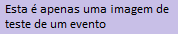

injectThis(`
<div class="container mt-4 ml-5">
    <nav aria-label="breadcrumb">
        <ol class="breadcrumb">
            <li class="breadcrumb-item"><a href="index.html">Home</a></li>
            <li class="breadcrumb-item active" aria-current="page">Detalhe do Evento</li>
        </ol>
    </nav>

    <div class="conteudo">
        <div class="card mb-3">
            
            <span class="small">Legenda: Imagem do evento que diz: "Esta é apenas uma imagem de teste de um
                evento"</legenda>
                <div class="card-body">
                    <p class="small tipo-evento">
                        Artes Visuais
                    </p>
                    <h5 class="card-title">
                        Madeira Nova - Jovem xilogravura contemporânea
                        <span class="classificacao_etaria_wrap">
                            <span title="Livre para todos os públicos"
                                class="classificacao_etaria livre">L</span>
                        </span>
                    </h5>
                    <p class="small">
                        COM CURADORIA DE CÉLIA BARROS
                    </p>

                    <p class="card-text">
                        <strong>Madeira Nova - Jovem xilogravura contemporânea</strong>, com curadoria de Célia
                        Barros. A mostra reúne obras de oito jovens artistas da cena contemporânea da
                        xilogravura.
                        Todos com pesquisas direcionadas para a imagem em grande formato e oriundos formações
                        artísticas diversas. São eles: Santidio Pereira, Luisa Almeida, Gabriel Balbino, Kamila
                        Vasques, Igor Santos, Julia Bastos, Rafael Toledo e Fernando Melo.
                        <br><br>
                        Abertura: 22/03, sexta, às 20h30 com a impressão coletiva de uma xilogravura de grande
                        formato, por meio de um processo performático desenvolvido pela artista Luisa Almeida.
                        <br><br>
                        <strong>Onde: Sesc São Carlos</strong> <br>
                        Visitação: de 23/3 a 26/5. Terça a sexta, das 13h30 às 21h30. Sábado, domingo e feriado,
                        das 10h às 18h.<br>
                        Agendamento de grupos: agendamento@scarlos.sescsp.org.br<br>
                        Área de convivência interna. Grátis.
                    </p>
                    <p class="card-text">
                        <i class="fas fa-gift"></i> Grátis
                    </p>
                </div>
        </div>
    </div>

    <div id="map"></div>
</div>
`,'#bodyinject','./js/detalhe-evento.js');